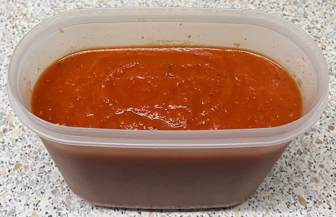
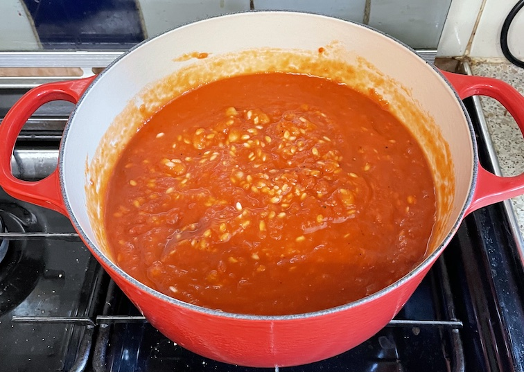

Red risotto
Sauce
- Cook for 30 mins, adding water if sticking
- 1 tbsp olive oil
- 2 carrots chopped
- 2 red onions chopped
- 2 red peppers chopped
- 2 cloves garlic
- Blitz until smooth with 2 tins of tomatoes
- Season with salt and brown sugar and taste until good
- Cool and keep in fridge overnight
Risotto
- Preheat oven to 220°C
- Bring to boil and simmer for 5 mins
- sauce
- 250g risotto rice
- 1 tin cannellini beans with liquid
- Cook on bottom shelf of oven for 20 mins with lid off until rice is soft to eat
- Dot in 150g of mozzarella balls quartered
Notes

